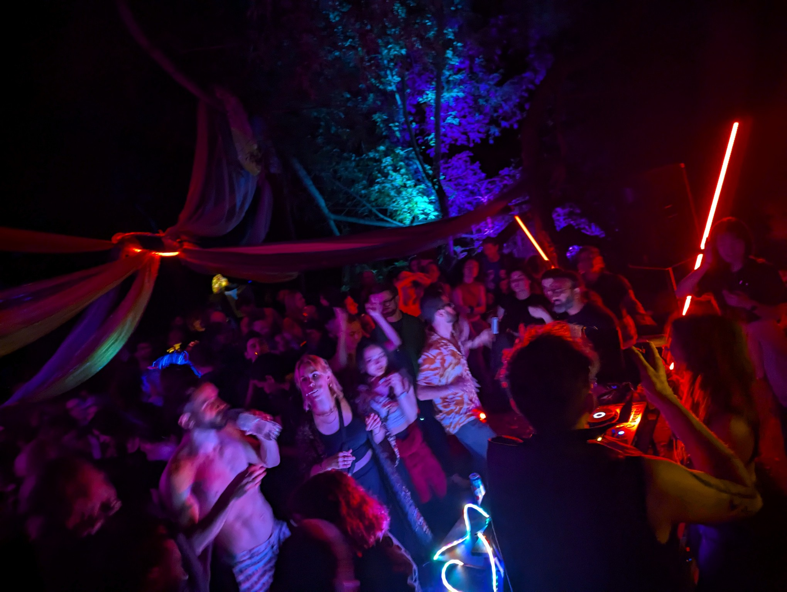
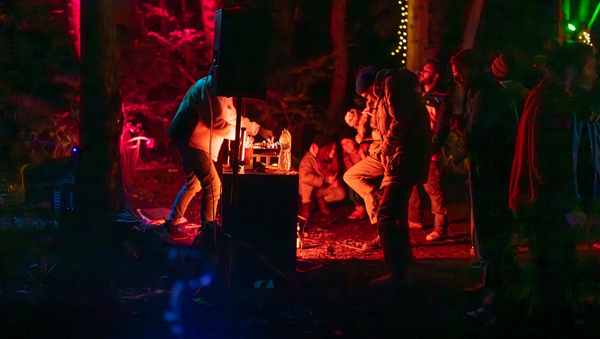

MOOWS / Issue 01 · August 2026
How to make a rave

Note: This is about throwing a grassroots party, run by dancers and for dancers. Community is at
the core of all our events. We’ve got no idea how to make money off parties.
- Assemble a dedicated crew and essential equipment. Key components for a nice party are a soundsystem, some lights (at least one), and some way to power all of it (more on that later). You’ll also need a way to get everything to the site.
- Scope out a location, ideally somewhere not too close to residences where you’ll be less likely to get noise complaints. A good dancefloor should have a perimeter – a sense of being on or off the dancefloor. Create a chill space as well, even if it’s just a blanket on the ground.
- Spread the word. Invite nice people who like to dance, who will come early and stay late. Be thoughtful about the messages you send leading up to the party as they will shape the vibe of the event.
- Put some music-obsessives behind the decks. Raves are a great place for beginner DJs to find their feet, as they may not get invited to play parties in proper venues yet. Prioritise DJs who put work into making parties happen, especially people who are part of the crew – even if they aren’t the best DJs you can imagine. The passion they put into their sets will translate into raw energy on the dancefloor.
- Money money money – collect donations in order to keep the parties going. Unexpected expenses are part of the process. Equipment breaks or gets lost. A van parked in the wrong place at the wrong time can result in fines.
- When the party draws to a close, gather hands to help pack away equipment and clean up any forgotten rubbish. Strike is a good moment to show respect for the site, learn the names of strangers you connected with on the dancefloor, and bask in the afterglow.
- Keep on growing your dedicated crew. Don’t concentrate power, and celebrate contributions from newer members. A rave crew is a living organism, and nothing discourages new people from contributing like being told “that’s not how we do it”.
Bass, Batteries, Boot Space
A rave without music is a gathering, but that doesn’t mean you need a bangin’ soundsystem to start. Whatever you have is good enough – even if that’s just a bluetooth speaker. As your rave grows, your soundsystem will grow with you.
Every rave crew eventually develops a van problem. You do not have to begin there. Our crew started with bike trailers, and the van faff sometimes makes us nostalgic for simpler times.
Soundsystems are secretly two parts: the bits that make the beats, and the bits that power them. How much power you need depends on your scale.
Backpack
Think: a Minirig 4, or whatever one person can carry.
Keep the dancefloor tight, point the speaker into it, and let the crowd provide the energy. Backpack speakers may last the rave on their internal batteries or only need phone-sized portable batteries for topups.
Boot
Think: a JBL PartyBox or Soundboks.
Now we’ve got a proper little dancefloor, easily supporting tens of dancers with a bit more breathing room. You’ll need friends to help you lift the soundsystem and some more serious juice to power it. A roughly 1kWh power station like an EcoFlow may get you through the event. If you’re not ready to invest in a soundsystem yet, you can rent a battery-powered speaker from the Library of Things for £13 per day.
Van
Think: separate powered tops and subs. At this scale, the dancefloor you can thrill is limited only by your wallet and lifting capacity. There’s no clear line but once you start getting standalone subs, it’s time to consider a generator. Batteries are great, but before long you'd need a fleet of them. One generator can often run the whole rig and be refuelled from a jerry can in minutes.
Gear gets pricey from Boot upwards, so rent before buying. You’ll learn more from one party with a rented system than from weeks comparing spec sheets. With generators, you’re probably better off renting. They require regular maintenance, and nobody wants a party to shut down because the genny wasn’t cared for properly.
Every rave is an experiment. Note pain points in setup and strike. Float through the dancefloor, listen from different spots, and watch where the dancers gravitate. At closing, record how much battery or fuel remains – or when it ran out.
The van will find you soon enough.
A note about programming
Be thoughtful about how the ordering of sets creates a cohesive musical journey, and try to ensure that the allocation of play slots is fair. Every DJ in the community benefits when the music we make is collaborative, not competitive. If someone is getting many opportunities to play during prime time, they should also be doing a lot of work to make the events happen (and still should probably give others a turn in the spotlight). Give opening and closing DJs longer slots, such that if the party starts late they don’t get their sets cut short.
You also want to have DJs who represent your audience. It makes the entire party feel more authentic, and translates into energy on the dancefloor. However, in our experience women are less likely to ask for slots or put themselves forward, and more likely to believe they aren’t ready. The solution is to actively invite women to DJ!
Representation matters so much, especially in a grassroots party: more girls behind the decks mean more girls on the dancefloor will believe they could do it too.
Make sure DJs know in advance what sort of equipment they’ll be using, as well as any technical constraints e.g. file types or USB formatting. Remind DJs to end their sets on time – every set running 5 minutes longer than planned can get out of hand throughout the night.

Top tips
- If you’re part of build, don’t forget to eat.
- Charge your solar lights & any battery packs.
- If you are a small girl, absolutely bring a ladder or a tall man who can lift you.
- As much as we love flames, we don’t think they mix with London raves. Fires and barbecues can cause problems, such as wildfires in dry summers. Gathering logs from the woods also destroys habitats for insects and small mammals.
- We typically divide and conquer the work that needs to be done for each rave. The lead roles we have for each rave are:
- Logistics
- Soundsystem
- Power
- Programming
- Strike
- Lights
- Decor
- Comms
- Donations
- If you meet authorities, such as park rangers, be polite and respectful. They are just doing their job. Being nice goes a long way towards getting them to look the other way and not interfere with the party.
- Public parks are a shared space and the families with 2.5 kids who come for a morning stroll have just as much right to be there as we do. Bring bin bags and pack out any rubbish.
Packing Lists
For the crew:
- Wires
- Scissors
- Reusable zip ties
- Insect repellant
- Bin bags
For the dancers, there are a few prevailing theories:
The ‘goldilocks’:
- water
- alcohol or other poisons of choice
- cup
- sensible shoes
- an extra layer
- (head)torch
and nice to have:
- rubbish
- bag
- bike stuff
- backcountry bathroom supplies
The ‘rave prepper’:
- comfortable backpack
- big camelbak for water
- trowel + toilet paper for complex bathroom situations
- bottle of wine, carbonated whiskey
- fun rave outfit
- strong boots for mixed terrain
- bumbag for on-person items such as keys, small bags, phone, ear protection
- additional layers to wear as the temperature drops during the night (especially if you’ve been sweating, you’ll suddenly be chilly)
- bike with strong bike light for getting there / back
- helmet for leaving on said bike wobbly
The ‘minimalist’:
- beer
- left shoe
- underwear
- right shoe
- beer